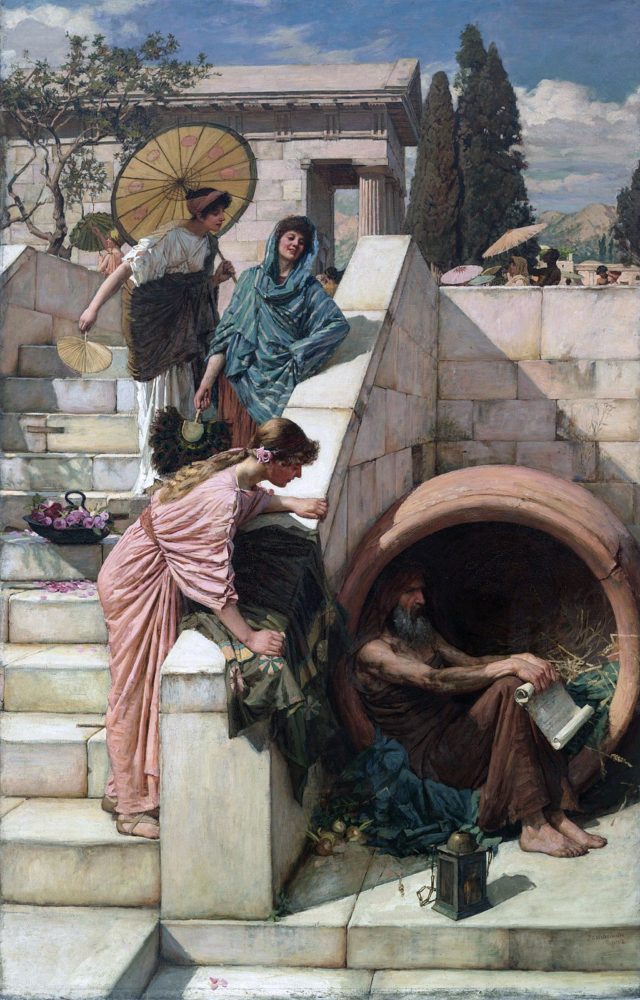

<head>
<meta charset="UTF-8" />
<meta name="keywords" content="drawing, painting" />
<meta name="description" content="drawings by Sunjy" />
<title>Sunjy</title>
<link rel="shortcut icon" type="image/x-icon" href="../../mImages/mCommon/favicon.ico" media="screen" />
<link rel="stylesheet" type="text/css" href="../../mCsses/mCommon/mCssA.css" />
<link rel="stylesheet" type="text/css" href="../../mCsses/mCommon/mCssB.css" />
<link rel="stylesheet" type="text/css" href="../../mCsses/mCommon/mCssC.css" />
<link rel="stylesheet" type="text/css" href="../../mCsses/mCommon/mCssD.css" />
<link rel="stylesheet" type="text/css" href="../../mCsses/mContent/mCssA.css" />
<link rel="stylesheet" type="text/css" href="../../mCsses/mContent/mCssB.css" />
<link rel="stylesheet" type="text/css" href="../../mCsses/mContent/mCssC.css" />
<link rel="stylesheet" type="text/css" href="../../mCsses/mContent/mCssD.css" />
</head>
<script type="text/javascript" src="../../mScripts/mContent/mContentAA.js" /></script>
<script type="text/javascript" src="../../mScripts/mContent/mContentAB.js" /></script>
<script type="text/javascript" src="../../mScripts/mContent/mContentAC.js" /></script>
<script type="text/javascript" src="../../mScripts/mContent/mContentAD.js" /></script>
<script type="text/javascript"></script> 
<script type="text/javascript">
document.write('<div class="mImgAbsolute"></div>');
/*
document.write('<p class="mFontSizeBColor" />From a white paper...</p>');
document.write('<table class="center"><tr><td>');
document.write('');
document.write('</td></tr></table>');
*/
</script>


<script type="text/javascript">
document.write('<p class="mFontSizeBColor" />Diogenes</p>');
document.write('<p class="mFontSizeSColor" />“Diogenes” by John William Waterhouse depicts “Diogenes the Cynic” (412 – 323 BC), who was a Greek philosopher. Diogenes was a controversial figure with a reputation for sleeping and eating wherever he chose in a highly non-traditional fashion.<br><br>Diogenes made a virtue of poverty. He begged for a living and often slept in a large ceramic jar in the marketplace, as Waterhouse has depicted him in this 1882 painting.<br><br>Waterhouse has contrasted the joyful and richly dressed women with the older man who was one of the founders of Cynic philosophy.<br><br>In front of his ceramic jar lodgings is a lamp that he carried during the day, claiming to be looking for an honest man.<br><br>He criticized Plato, disputed his interpretation of Socrates, and he was also noted for having mocked Alexander the Great, both in public and to his face when he visited Corinth in 336.<br><br>Diogenes passed his philosophy of Cynicism influenced Zeno, who fashioned it into the school of Stoicism, one of the most enduring schools of Greek philosophy.<br><br>Cynicism Philosophy<br><br>Diogenes maintained that all the artificial growths of society were incompatible with happiness and that morality implies a return to the simplicity of nature. In his words:<br><br>“Humans have complicated every simple gift of the gods.” <br><br>Diogenes is credited with the first known use of the word “cosmopolitan.” When he was asked where he came from, he replied, “I am a citizen of the world,” which in Greek was “cosmopolites.”<br><br>This was a radical claim in a world where a man’s identity was intimately tied to his citizenship of a particular city-state.<br><br>Diogenes shared Socrates’s love of virtue and indifference to wealth, together with a disdain for general opinion. Diogenes taught by living example.<br><br>He tried to demonstrate that wisdom and happiness belong to the man who is independent of society and that civilization is regressive.<br><br>However, any philosophy can be taken to the extreme, and Diogenes’ name has been applied to a behavioral disorder characterized by apparently involuntary self-neglect and hoarding.<br></p>');
document.write('<table class="center" /><tr><td>');
document.write('<br>Diogenes made a virtue of poverty. He begged for a living and often slept in a large ceramic jar in the marketplace, as Waterhouse has depicted him in this 1882 painting.<br><br>Waterhouse has contrasted the joyful and richly dressed women with the older man who was one of the founders of Cynic philosophy.<br><br>In front of his ceramic jar lodgings is a lamp that he carried during the day, claiming to be looking for an honest man.<br><br>He criticized Plato, disputed his interpretation of Socrates, and he was also noted for having mocked Alexander the Great, both in public and to his face when he visited Corinth in 336.<br><br>Diogenes passed his philosophy of Cynicism influenced Zeno, who fashioned it into the school of Stoicism, one of the most enduring schools of Greek philosophy.<br><br>Cynicism Philosophy<br><br>Diogenes maintained that all the artificial growths of society were incompatible with happiness and that morality implies a return to the simplicity of nature. In his words:<br><br>“Humans have complicated every simple gift of the gods.” <br><br>Diogenes is credited with the first known use of the word “cosmopolitan.” When he was asked where he came from, he replied, “I am a citizen of the world,” which in Greek was “cosmopolites.”<br><br>This was a radical claim in a world where a man’s identity was intimately tied to his citizenship of a particular city-state.<br><br>Diogenes shared Socrates’s love of virtue and indifference to wealth, together with a disdain for general opinion. Diogenes taught by living example.<br><br>He tried to demonstrate that wisdom and happiness belong to the man who is independent of society and that civilization is regressive.<br><br>However, any philosophy can be taken to the extreme, and Diogenes’ name has been applied to a behavioral disorder characterized by apparently involuntary self-neglect and hoarding.<br>" />');
document.write('</td></tr></table>');
</script>


